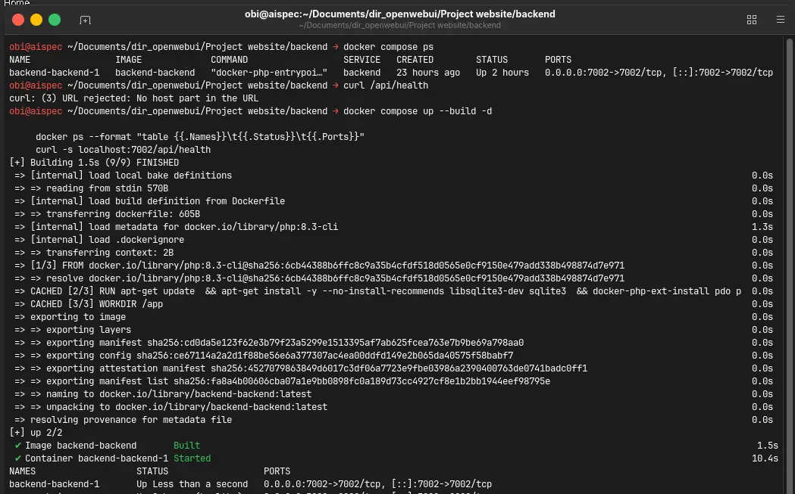
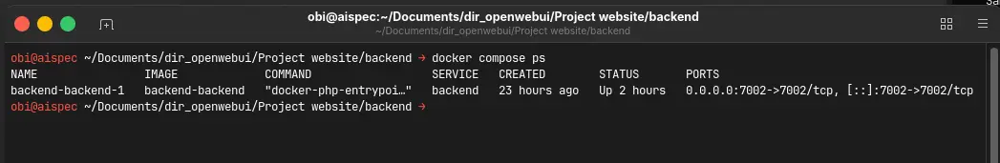
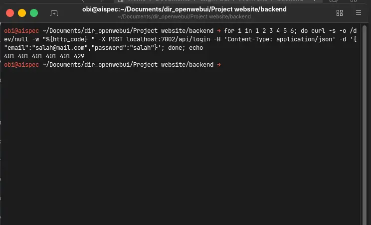
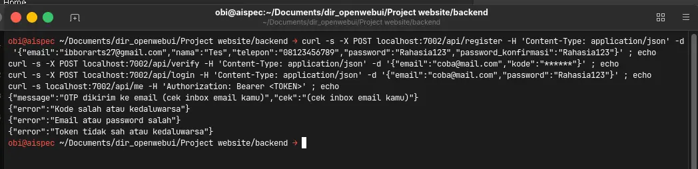
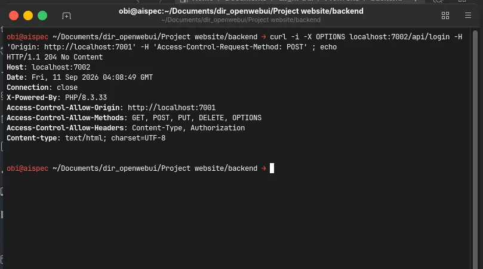
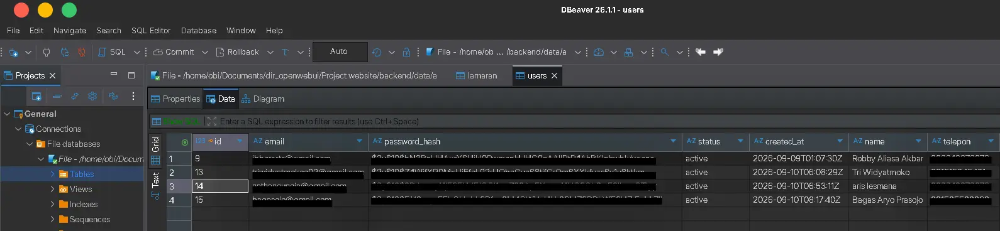

Experiment 011
Stable Full backend · Frontend in EXP 010 →One Auth Backend for Many Frontends — PHP, SQLite & Docker Entry Point in a Day.
Can one small auth backend — PHP + SQLite + Docker, no framework, no Composer — serve many frontends with real OTP, opaque tokens, rate limits and per-user Job Tracker sync, built with only a 35B local coder?
Same Tiel-Coder-35B via llama.cpp-server · 1 image · 1 file · 0 deps · Live daily 08.00–21.00 WIB (UTC+7)
System Requirements
CPU
Intel Core i5-11400F
RAM
16GB DDR4 3200MT/s
GPU
RX 6700 XT 12GB
OS
Ubuntu Desktop 26.04 LTS
Model
Tiel-Coder-35B-A3B-MTP-UD-Q4_K_S.gguf
Engine
llama.cpp-server
Stack
PHP 8.3 + PDO SQLite + Docker
Time / Status
Same 35B local coder / STABLE
Same local coder as EXP 010 via llama.cpp-server. Inference flags in EXP 001. Backend runs via 1 Docker image (php:8.3-cli + pdo_sqlite), 1 SQLite file, 0 Composer packages.
Screenshots
Terminal proof — no UI to hide behind. If the API is offline when you try curl, these still show exactly how it answers.






Live API
Talk to it with curl — no UI needed.
Backend live daily 08.00–21.00 WIB (UTC+7) when my PC is on. Outside those hours curl fails — expected (see Live Status).
Health — no login needed
curl -s localhost:7002/api/health
# {"ok":true,"time":"2026-09-09T00:00:00Z"}Auth — register to me (redacted)
curl -X POST localhost:7002/api/register -H 'Content-Type: application/json' -d '{"email":"you@mail.com","nama":"You","telepon":"08123456789","password":"Rahasia123","password_konfirmasi":"Rahasia123"}'
curl -X POST localhost:7002/api/verify -H 'Content-Type: application/json' -d '{"email":"you@mail.com","kode":"******"}'
curl -X POST localhost:7002/api/login -H 'Content-Type: application/json' -d '{"email":"you@mail.com","password":"Rahasia123"}'
curl localhost:7002/api/me -H 'Authorization: Bearer ******'Job Tracker as client — token required
curl localhost:7002/api/lamaran -H 'Authorization: Bearer ******' # 200 own rows only. Full UI in EXP 010.
Local base: http://localhost:7002 • Tunnel when PC is on: https://aispec.tail06293c.ts.net • .env never shown
For those of you unable to read this data from technical standpoint, here is the conclusion:
Every new app needs login. Copying login 5 times gets messy fast. I asked myself if 1 small service could serve them all. ✨
I built one small login service on my own machine with local AI — no extra packages. My first try with scattered auth failed and drifted, so I switched to one place that decides everything. 🤝
The Job Tracker is the first customer. Next apps just register their address, no re-code. It sends 6-digit codes via email, gives 1-hour passes, and blocks spam after 5 tries. 💰
It already runs on modest hardware with 1 Docker image and 1 database file. For now it lives on my home PC (08.00–21.00 WIB) — stable for this experiment, not yet 24/7. Reliability matters more than specs. 🛡️
What that means in practice: I only maintain auth once. Every new frontend just does fetch. That is the whole trick. 🎯
Experiment Details
Am I capable of running login for many apps without rebuilding it every time? I ask because every new webapp needs register + OTP + login + forgot, and copying that 5 times drifts fast.
I need 1 local auth service many frontends can share. Frontend only does fetch. All decisions — hash, OTP, expiry, token — live in 1 backend.
I locked PHP because it is the same family as my invoice save.php. I need password_hash, random_bytes, PDO — all built-in, 0 Composer packages. I chose Docker because my laptop has no native PHP and I cannot apt install. I chose raw SMTP because every line is traceable: EHLO → STARTTLS → AUTH → MAIL → RCPT → DATA → QUIT. Mailer libs and JWT are production upgrades, not v1.
I built it with the same Tiel-Coder-35B-A3B-MTP-UD-Q4_K_S.gguf via llama.cpp-server. AI handled syntax and boilerplate, decisions stayed with me. Flags are in EXP 001. Honest scope: local + auth flow working. Full hardening and deploy is a separate project, not here.
public/index.php is the front door. I load .env with no library, check CORS (explicit list + same-host pass), answer OPTIONS 204, then route health / register / verify / login / me / forgot / reset / lamaran. Unknown paths get generic 404/405/500. I keep messages generic on purpose — no internal details leak to the browser.
- 1.
POST /api/register— I create apendinguser and send a 6-digit OTP via Gmail. Password must be≥8 + upper + digit, checked on the server, not just the browser. - 2.
POST /api/verify— I flippending → activeand issue a 64-hex opaque token (1 hour). Wrong 5 times locks for 10 minutes. Errors stay generic. - 3.
POST /api/login + GET /api/me— I check hash, issue token, then guard every open with/api/me. Dead token kicks back to login. I never tell whether the email or the password was wrong. - 4.
POST /api/forgot + /api/reset— I always answer generic200so emails cannot be harvested. Reset re-hashes and wipes all sessions — forced relogin everywhere. OTP 5 min, reset 10 min, by my own setting for local use.
I keep 1 file data/auth.db: users (email UNIQUE, hash, nama, telepon, pending→active), otps, reset_tokens, sessions (token + 1h), rate_limits, lamaran (owner email + idx, company, position, tanggal, status, portal, link). I migrate with PRAGMA table_info + ALTER — no data loss. Honest tradeoff: I store OTP plaintext with short expiry locally so I can trace it. I will hash it in production later.
I run php:8.3-cli + pdo_sqlite in 1 image. Command is php -S 0.0.0.0:7002 -t public public/index.php. I start all with docker compose up --build, then serve the webapp with python3 -m http.server 7001. Data persists in ./data/ (gitignored). I need no native PHP at all.
Different port means different origin — browsers block fetch until I allow it. I keep an explicit CORS_ORIGINS list (:7001, add :7003 for the next app, no re-code) plus a same-host pass so Tailscale IP changes need no config. I cap sensitive endpoints at 5/min/IP via SQLite. Job Tracker as client: every /api/lamaran needs a token, I check email from token == row owner. UI detail stays in EXP 010.
- 1.
CORS blocked everything first. My reasoning was flawed — I forgot different ports are different origins. I fixed it with an allowlist, not a wildcard.
- 2.
Mailpit had to go. I removed it 2026-09-09. OTP must go via real Gmail App Password (16 chars, not login password). No shortcut.
- 3.
1-hour kick looked like a bug. I got kicked to login and thought I broke sessions. It turned out to be expected expiry doing its job.
Small numbers that prove it runs — screenshots above, no cold-start tricks.
Docker images
1 image
php 8.3 + sqlite
SQLite files
1 file
6 tables
Auth endpoints
6 endpoints
+ health + tracker
Rate
5 / min
then 429
OTP windows
5 → 10 min
max 5 tries
Dependencies
0 Composer
vanilla SMTP
Backend Code
Router CORS — public/index.php (essence, no secrets)
$origin = $_SERVER['HTTP_ORIGIN'] ?? '';
$boleh = array_map('trim', explode(',', $cfg['CORS_ORIGINS']));
$izinkan = in_array($origin, $boleh, true);
// + same-host Tailscale pass, then:
header("Access-Control-Allow-Origin: $origin"); // only if allowed
// OPTIONS → 204, then route health/register/verify/login/me/forgot/reset/lamaranDB — src/db.php (schema only)
users(email UNIQUE, password_hash, nama, telepon, pending→active) otps(email, kode 6-digit, +5min, max 5 tries) sessions(token 64hex, +1h) -- opaque, SELECT to check, DELETE to revoke lamaran(email owner + idx, company, position, tanggal, status, portal, link)
Guard — token check (essence)
$email = email_dari_token($pdo, $_SERVER['HTTP_AUTHORIZATION'] ?? ''); if ($email === null) json(401, ['error' => 'Token tidak sah atau kedaluwarsa']);
No .env content, no SMTP secrets, no real OTP or tokens here. I keep those off the page on purpose.
FAQ
Frequently Asked Questions
Why PHP + SQLite + Docker instead of Node + Postgres?▼
Locked for this scale: PHP built-ins already cover hash + random + PDO, SQLite is 1 file with zero server, Docker gives PHP without native install. Postgres + JWT + mailer libs are noted as production upgrades, not v1.
How can :7001 talk to :7002 without being blocked?▼
Explicit CORS allowlist plus same-host pass for Tailscale. Preflight OPTIONS returns 204 with Allow-Origin only for listed hosts. Next app (:7003) just gets added to the list.
Why does the API sometimes not answer?▼
Not on a 24/7 VPS yet — home PC, online daily 08.00–21.00 WIB (UTC+7). Outside those hours fetch fails and frontend shows a toast. Screenshots + curl logs remain as proof.
Live Status
Local PC, not yet 24/7 VPS.
✅ What works now
- Docker 1-command up
- Health ok without login
- 6 auth endpoints
- Gmail OTP delivery
- 1-hour opaque tokens
- Rate 5/min anti-spam
- Job Tracker per-user sync
- Reusable origins
- Online daily 08.00–21.00 WIB (UTC+7)
🚧 What isn't production yet
- Not yet 24/7
- Still local (personal PC)
- Early-stage features
- Collecting feedback
- Hardening + deploy = separate project
Runs locally on my personal PC, live daily 08.00–21.00 WIB (UTC+7). Off-hours → unreachable, expected. Screenshots + curl logs above still show exactly how it answers.
Disclaimer
Local stable, not production-hardened
Validated with the same Tiel-Coder-35B via llama.cpp-server (flags in EXP 001). OTP plaintext short-expiry locally for learning — I will hash it in production later, by my own note, not a guarantee for every setup. Mailpit removed 2026-09-09, Gmail only.
Frontend: EXP 010 + /jobtracker/ · This: EXP 011 backend · Machine: EXP 001
Chain: EXP 010 UI → EXP 011 backend → EXP 001 machine.